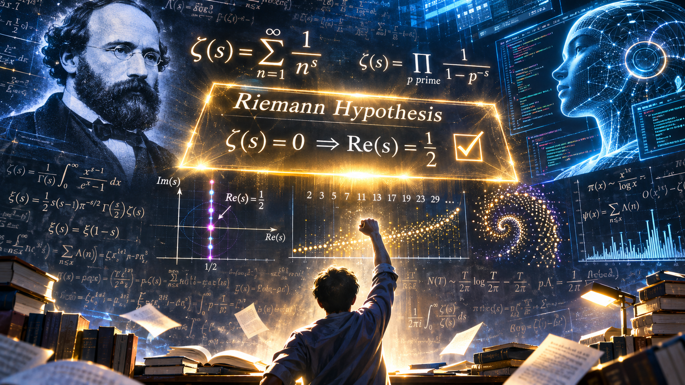

어제 앤트로픽(Claude 만든 회사) 소속 수학자 레벤트 알푀게가 클로드랑 같이 167년 묵은 수학계 최종보스 '리만 가설' 증명을 끝냈다면서 검증용 코드를 통째로 풀었음.
당연히 전 세계 수학자들 눈 뒤집혀서 지금 코드 뜯어보는 중이고
(MIT 교수가 돌려보니까 일단 프로그램 컴파일 에러 없이 통과는 했는데, 진짜 리만 가설을 제대로 정의해서 푼 건지는 아직 최종 검증 중임),
근데 커뮤마다 "야 리만 가설 풀리면 소수 규칙 다 털려서 은행 비밀번호랑 코인 지갑 다 해킹당하는 거 아님?" 이러면서 호들갑 떨던데
결론부터 말하면 그런 일은 절대 안 일어남.
오히려 공학자들은 이미 리만 가설이 '참'일 거라고 깔고 시스템을 다 짜놨음.
만약 이번 증명이 진짜로 최종 확정된다면, 우리 일상이나 산업에 찾아올 현실적인 변화 3가지
1. 은행·코인 해킹? 오히려 보안이 더 단단해짐
사람들이 제일 많이 착각하는 게 '리만 가설 풀림 = 소수 공식 발견 = RSA 암호 해독'인데 아예 다른 얘기임. 리만 가설은 소수들이 얼마나 촘촘하게 깔려 있는지 그 '오차 범위'를 확정해 줄 뿐이지, 거대한 숫자를 1초 만에 소인수분해하는 치트키를 주지 않음.
오히려 지금까지 "리만 가설이 맞다는 가정하에 안전함" 이라고 반쯤 믿고 쓰던 암호·난수 시스템들이 100% 수학적 보증서를 받게 되는 셈임. (물론 양자컴퓨터 대비용 차세대 암호로 갈아타는 속도는 더 빨라지겠지)
2. 컴퓨터 연산 속도랑 서버 효율이 은근히 올라감
컴퓨터 공학 쪽에는 "리만 가설이 참일 때만 가장 빠르게 돌아가는 알고리즘"들이 꽤 있음. 대표적으로 어떤 숫자가 소수인지 판별하는 알고리즘 같은 거.
그동안은 "혹시라도 리만 가설이 틀렸으면 어쩌지?" 싶어서 금융이나 보안 서버 돌릴 때 안전 마진(추가 검증 연산)을 덕지덕지 붙여서 일부러 무겁게 돌렸음. 증명이 확정되면 이 찝찝한 족쇄를 다 풀고 훨씬 가볍고 빠른 알고리즘을 상용 표준으로 쓸 수 있게 됨.
3. [진짜 핵심] 리만 가설보다 더 무서운 건 'AI가 증명한 방식'임
사실 우리 삶에 당장 제일 큰 충격을 주는 건 리만 가설 그 자체가 아님. 이번에 클로드가 증명을 제출할 때 사람이 읽는 논문이 아니라 'Lean(린)'이라는 수학 검증 전용 코딩 언어로 1,700만 줄 넘게 짜서 제출했음.
이게 왜 소름 돋는 거냐면, 기존 AI는 헛소리(환각)를 그럴듯하게 포장하는 게 문제였는데
Lean 코드는 논리적 비약이 0.0001%라도 있으면 아예 실행(컴파일) 자체가 안 됨.
즉, "AI가 스스로 수십만 페이지짜리 초고난도 논리를 짜고, 기계적으로 '버그 0%' 인증까지 찍어내는 시대"가 열렸다는 뜻임.
당장 앞으로 자율주행 제어기, 우주항공 소프트웨어, 2나노 초미세 반도체 칩 설계처럼 코드 한 줄 버그 나면 수천억 날아가고 사람 죽는 분야에서 AI가 무결점 설계·검증을 도맡게 됨.
어제 미국 증시에서 반도체 설계 툴 회사들(시높시스, 케이던스) 주가가 들썩인 것도 다 이 때문임.
세줄요약
-
리만 가설 풀려도 은행·코인 안 털림. 오히려 기존 보안 시스템이 "100% 안전함" 도장 받는 거임.
-
그동안 찝찝해서 못 쓰던 초고속 연산 알고리즘들이 상용 표준으로 풀림.
-
진짜 충격은 리만 가설보다 AI가 '환각 0% 수학 검증 코드(Lean)'를 스스로 짰다는 사실임. 앞으로 반도체·자율주행·항공 무결점 설계 판도가 바뀜.
증명하는 전체 context 세션좀 공개해줘라
궁금하다 어떤모델 어떻게 어떤과정